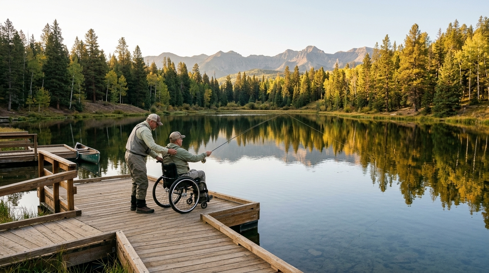

Disabled Veterans Outdoor Access Program
Restorative High-Country Retreats & Hosted Wildlife Management Hunts in Chama, New Mexico.
Spanning 1,917 acres in the Chama Valley, our Disabled Veterans Program provides low-cost, hosted wildlife management hunts, three-tier adaptive fly-fishing and Euro nymphing retreats, and quiet outdoor restoration—free from the crowds and high fees of commercial outfitters.

What Our Veterans Program Offers
1. Low-Cost Hosted Wildlife Management Hunts
Veterans participate directly in our conservation mission through ethical, hosted wildlife management hunts for Rocky Mountain elk, mule deer, wild turkey, and upland game birds, paced around each veteran’s comfort and stamina.
2. Adaptive Spot-and-Stalk & Mobility Support
Sanctuary zones are mapped by terrain difficulty, and our Landowner Host and Field Escorts assist with property orientation, terrain navigation, ground-blind setup, and field recovery.
3. Three-Tier Adaptive Trout Angling & Euro Nymphing
Enjoy 100% weapon-free fly-fishing retreat weeks along our two solar-fed Rio Grande Cutthroat trout ponds. We accommodate traditional fly-fishing (Tier 1), Euro nymphing (Tier 2), and wheelchair/double-amputee angling (Tier 3) using heavy-duty mechanical rod cradles mounted on floating ADA casting docks with barbless, lead-free tungsten-beaded nymphs.
4. Dedicated Veteran Accommodations
Veterans stay in private, comfortable sanctuary lodging separated from youth programs and administrative operations.
Apply or Partner With Us
Disabled veterans, military bases, and veteran service organizations can request seasonal retreat availability by emailing info@dgchamasanctuaryproject.com.
Inquire About Veteran Retreats